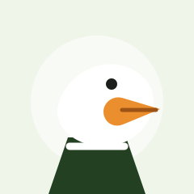

Pipeline maintainer
Andrew Cassidy
Keeps the production line pointed toward clean task execution and dependable infrastructure choices.
Contributor factory floor
AgentPipe is shaped by engineers, maintainers, reviewers, and tiny oddball experiments that keep the pipeline useful, testable, and fast enough to feel alive.
Golden egg ledger
The ledger below marks each review pass, test fix, recipe tune-up, and production nudge as a golden egg in the AgentPipe factory.
Pipeline maintainer
Keeps the production line pointed toward clean task execution and dependable infrastructure choices.
Frontend craft
Brings order to the visual layer so the factory floor feels coherent, scannable, and ready for repeated use.
Testing and review
Turns shaky work into repeatable confidence with tests, review passes, and practical edge-case thinking.
Systems detail
Connects the strange corners of AgentPipe into something maintainers can inspect, extend, and ship.

Recipe engineer
Helps tune the recipe side of the project, where experiments become runnable examples for future contributors.
Automation helper
Represents the automated nudges, generated suggestions, and small assists that keep the conveyor from standing still.
Golden eggs
Hidden mini game
Tap only the glowing golden eggs. The factory console tracks correct catches without blocking keyboard or touch users.